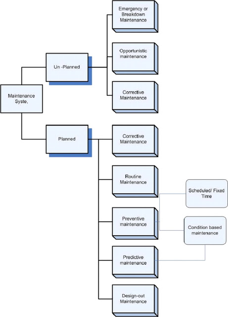

Failure and MaintenanceMaintenance simply refers to the check up of the mechanical components to notify if any failures that may be hamper the condition of the vehicle in future and taking a correct action to minimize the up coming function. Types of maintenance in practice are as shown in the flow chart above: Although there are various types of maintenance procedures but the most common and used all over the automobile companies are preventive maintenance.
1. Preventive maintenance
2. Repair
Failure analysis
Failure analysis concentrates more on unexpected failure of machine and components, where defect analysis is more general term and includes different types of defect and faults.
Four main approaches for failure analysis:-
⦁ Define the problem this may also include finding the function of defective unit.
⦁ Eliminate the function if possible, what can be done to eliminate the function.
⦁ Develop alternative means for performing the function.
⦁ Improve the present means of achieving function.
Fault Tree Analysis (FTA)
FTA is the most widely used tool for failure analysis of a vehicle, it is used into the critical aspects of the feasible and selected system design concepts and technologies and manufacturing application with a view to reduce anticipated failure and faults
Steps to conduct FTA
⦁ Identify top level events
⦁ Develop the fault tree
⦁ Analysis the fault tree :- Both quantitatively and qualitatively
After carrying out the failure analysis of the vehicle and finding out the problems repair work is done. Failure analysis is only performed if there is a certain problem in the vehicle's component. Maintenance requires no failure analysis because this type of job is performed much before the failure of the component.Every automobile company provides a certain standard time and kilometer in reading for a routine checkup of the vehicle known as servicing. For example a Mahindra Maximo plus is provided with a standard time of 2 months from sale or 5000 kilometer for its first servicing to be performed. These servicing gives an advantage of vehicle's long life span, better quality rides and many more functions.
For the repair function of a vehicle, failure analysis is conducted to notify and verify the problem due to which the component failed. After the analysis certain action is taken for the repair or replacement of the component as per the required need.
These two are the types of maintenance procedure every automobile company provides the customers with. Automobile workshops conduct these types of maintenance procedure on command of the company itself.
|